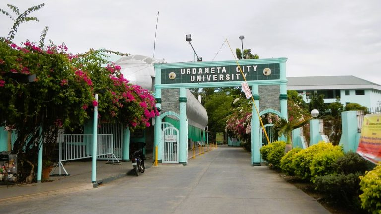
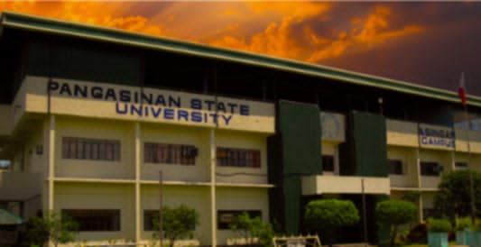

My elementary school is a very special place where all my dreams started and many great memories were made. It’s where I first learned about the world around me and began to think about my future. I made many friends there, and we shared so many fun moments, from playing together during breaks to helping each other in class. The teachers were always supportive, and they taught me important lessons that helped me grow. My elementary school years were filled with excitement and learning, and they played a big part in shaping who I am today. It’s where I first started dreaming big, and those dreams still motivate me every day.I will keep thinking it wherever I feel exhausted.
DON RAMON E COSTALES MEMORIAL NATIONAL HIGHSCHOOL
My high school was a time when I started to feel more exhausted but also began to open my mind and heart to what I would face in the future. It wasn’t always easy, and sometimes the pressure of schoolwork and responsibilities was tough, but it helped me learn a lot about myself. High school taught me how to face challenges, manage my time, and push through difficult moments.During these years, I started thinking about the future more seriously, wondering where I would go and what I would become. It was a time of self-discovery, where I began to realize the kind of person I want to be and the goals I want to achieve.

URDANETA CITY UNIVERSITY
I started my college life at UCU, studying Architecture. I spent three years working hard and learning a lot about the field. At first, I thought it was the right path for me, but as time went on, I faced challenges that made me think differently. I realized that Architecture wasn’t the best fit for me and decided to move on. It was a hard decision because I had put in so much time and effort, but those three years taught me many important lessons about myself and helped me grow as a person.so I decided to transfer to a new school and change my course. It was a hard choice, but I knew it was the best decision for me. Those experiences taught me a lot and helped me grow.

PANGASINAN STATE UNIVERSITY-ASINGAN CAMPUS
I chose this school because it was my first choice. When I first looked into it, I wanted to study Architecture, but unfortunately, the course wasn’t available here at that time. After spending some time at another school, I realized this school was still the best option for me, especially because it’s closer to home. Now that I’ve transferred here, one of the main reasons I’m happy with my decision is that I don’t have to deal with the long and tiring commute anymore. It’s much more convenient, and this has made it easier for me to focus on my studies and manage my time better. I believe this school is a great fit for me, and I’m excited to continue my education here.